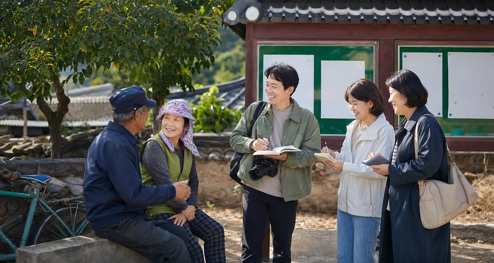

Village Stories
마을 이야기
군북의 오래된 시간과 주민 활동을 이야기로 기록합니다.
Village Stories
마을 이야기
총 6개의 게시물이 있습니다.
| 번호 | 제목 | 첨부 | 작성자 | 작성일 | 조회 |
|---|---|---|---|---|---|
| 공지 | 군북 꿈키움 기자단 마을소식 모집 | - | 기자단 | 2026.05.15 | 74 |
| 6 | 조정리 건강체조교실로 이어지는 봄 모임 | 파일 | 마을기록팀 | 2026.05.14 | 68 |
| 5 | 두두2리 작은 회의에서 시작한 마을 기록 | - | 운영팀 | 2026.05.12 | 55 |
| 4 | 내부2리 함께 배우고 다시 만나는 생활문화 | - | 프로그램팀 | 2026.05.10 | 49 |
| 3 | 배후마을 생활문화 기록 참여자 모집 | 파일 | 꿈키움센터 | 2026.05.08 | 43 |
| 2 | 군북의 계절 농산물과 마을 이야기 | - | 로컬장터 | 2026.05.03 | 39 |